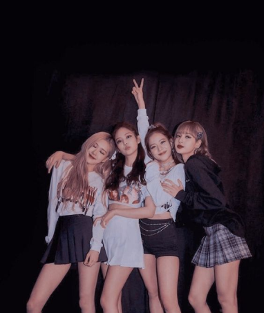

ROSE

Головна вокалістка
ведуча танцівниця
11 лютого 1997 (27 років)
Blackpink — південнокорейський жіночий музичний гурт із Сеула, що виконує музику в жанрах K-pop, хіп-хоп, денс-поп, тін-поп. Утворений у 2016 році компанією YG Entertainment. Учасниці: Кім Джісу, Кім Дженні, Пак Чейон та Лаліса Манобан.

Головна вокалістка
ведуча танцівниця
11 лютого 1997 (27 років)

Віжуал
ведуча вокалістка
3 січня 1995 (29 років)

Головна реперка
ведуча вокалістка
16 січня 1996 (28 років)

макне
Головна танцівниця
27 березня 1997 (27 років)